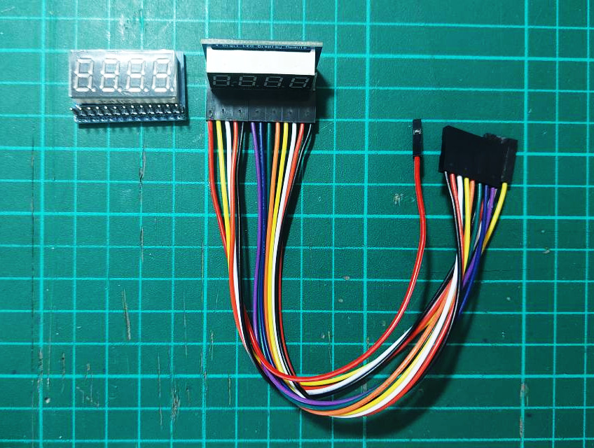
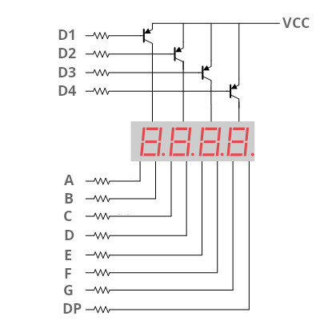

Tutorial: 4-Digit 7-Segment Display with Time Multiplexing Control#
7-Segment Display Modules#
A 7-segment display is an output device consisting of 7 LED segments, along with an optional decimal point (DP). It is primarily used to display digits from '0' to '9', and can also represent some letters and symbols with limitations.
There are two types of 7-segment displays:
- Common Cathode (CC): All cathodes of the LEDs are connected to a common GND pin.
- Common Anode (CA): All anodes of the LEDs are connected to a common VCC pin.
A typical 7-segment display has 8 segment control pins ('A' - 'G' and 'DP') and one common ('COM') pin. For the CA type, the 'com' pin must be connected to VCC, while for the CC type, it must be connected to GND.
7-segment displays can have multiple digits. Controlling each digit independently requires 8 pins per digit. For example, a 6-digit display would need 6 × 8 = 48 control pins. Some FPGA boards, such as the MAX10-Lite, have onboard 6-digit 7-segment displays with separate 8-bit control lines for each digit. This configuration requires a relatively large number of I/O pins.

Figure: An example of 4-digit 7-segment display module
Time-Multiplexing Technique#
To reduce the number of required control pins, time-multiplexing is often used:
- In this method, all digits share the same segment control lines.
- Each digit is activated one at a time in rapid succession, with its corresponding segment data.
When this switching occurs fast enough (e.g., over 100 Hz), persistence of vision makes it appear as if all digits are lit simultaneously, each showing its correct value. This technique dramatically reduces I/O usage while maintaining readable output.
To selectively control which digit is active in a multi-digit 7-segment display, transistors — such as BJTs or MOSFETs — are used to switch the COM (common) pin of each digit. For example, a 4-digit display would require 4 control transistors, one for each digit.
VHDL Demo Code#
This VHDL code demonstrates how to control a 4-digit 7-segment display module
(common-anode type) using a time-multiplexing technique.
The design displays a fixed BCD sequence ('0123') across the 4 digits.
When the reset signal (RST_N) is asserted low, all digits display '0'.
VHDL Code Listing
-- File: disp_7seg_demo.vhd
LIBRARY ieee;
USE ieee.std_logic_1164.ALL;
USE ieee.numeric_std.ALL;
ENTITY disp_7seg_demo IS
GENERIC (
CLK_HZ : NATURAL := 50000000; -- system clock frequency
NUM_DIGITS : NATURAL := 4 -- number of digits used
);
PORT (
CLK : IN STD_LOGIC;
RST_N : IN STD_LOGIC;
SEG7 : OUT STD_LOGIC_VECTOR(7 DOWNTO 0); -- 7-segment + DP
DIGITS : OUT STD_LOGIC_VECTOR(NUM_DIGITS - 1 DOWNTO 0) -- 7seg control bits
);
END disp_7seg_demo;
ARCHITECTURE behavioral OF disp_7seg_demo IS
CONSTANT SCAN_CNT_MAX : NATURAL := (CLK_HZ/250) - 1;
TYPE digit_array_t IS ARRAY (0 TO NUM_DIGITS - 1) OF INTEGER RANGE 0 TO 9;
SIGNAL bcd_count : digit_array_t;
SIGNAL data_buf : STD_LOGIC_VECTOR(7 DOWNTO 0);
SIGNAL digits_sel : STD_LOGIC_VECTOR(NUM_DIGITS - 1 DOWNTO 0);
SIGNAL digit_index : NATURAL RANGE 0 TO NUM_DIGITS - 1 := 0;
SUBTYPE nibble IS unsigned(3 DOWNTO 0);
-- This function implements a BCD to 7-Segment decoder.
FUNCTION BCD2SEG7(data : nibble) RETURN STD_LOGIC_VECTOR IS
VARIABLE seg7bits : STD_LOGIC_VECTOR(6 DOWNTO 0);
BEGIN
CASE data IS
WHEN "0000" => seg7bits := "0111111"; -- 0
WHEN "0001" => seg7bits := "0000110"; -- 1
WHEN "0010" => seg7bits := "1011011"; -- 2
WHEN "0011" => seg7bits := "1001111"; -- 3
WHEN "0100" => seg7bits := "1100110"; -- 4
WHEN "0101" => seg7bits := "1101101"; -- 5
WHEN "0110" => seg7bits := "1111101"; -- 6
WHEN "0111" => seg7bits := "0000111"; -- 7
WHEN "1000" => seg7bits := "1111111"; -- 8
WHEN "1001" => seg7bits := "1101111"; -- 9
WHEN OTHERS => seg7bits := "0000000"; -- off
END CASE;
RETURN seg7bits;
END BCD2SEG7;
BEGIN
PROCESS (RST_N, CLK)
BEGIN
IF RST_N = '0' THEN
bcd_count(0) <= 0;
bcd_count(1) <= 0;
bcd_count(2) <= 0;
bcd_count(3) <= 0;
ELSIF rising_edge(CLK) THEN
bcd_count(0) <= 0;
bcd_count(1) <= 1;
bcd_count(2) <= 2;
bcd_count(3) <= 3;
END IF;
END PROCESS;
-- This process implements a 7-segment driver using time-multiplexing.
PROCESS (RST_N, CLK)
VARIABLE wait_cnt : NATURAL RANGE 0 TO SCAN_CNT_MAX := 0;
VARIABLE clk_enabled : BOOLEAN;
VARIABLE bcd_value : unsigned(3 DOWNTO 0);
BEGIN
IF RST_N = '0' THEN
wait_cnt := 0;
data_buf <= x"00";
digits_sel <= (OTHERS => '0');
digit_index <= 0;
ELSIF rising_edge(CLK) THEN
IF wait_cnt = SCAN_CNT_MAX THEN
wait_cnt := 0;
clk_enabled := true;
ELSE
wait_cnt := wait_cnt + 1;
clk_enabled := false;
END IF;
IF clk_enabled THEN
IF digit_index = NUM_DIGITS - 1 THEN
digit_index <= 0;
ELSE
digit_index <= digit_index + 1;
END IF;
FOR i IN 0 TO NUM_DIGITS - 1 LOOP
IF i = digit_index THEN
digits_sel(i) <= '1'; -- active
ELSE
digits_sel(i) <= '0'; -- inactive
END IF;
END LOOP;
bcd_value := to_unsigned(bcd_count(digit_index), 4);
data_buf <= '0' & BCD2SEG7(bcd_value);
END IF;
END IF;
END PROCESS;
DIGITS <= NOT digits_sel; -- active-low
SEG7 <= NOT data_buf; -- for common-anode 7-segment LEDs
END behavioral;
The 4-digit 7-segment display module used in this tutorial has the following pins:
VCC: Power supply pinD1~D4: Digit control or select pins (active-low), corresponding to digits from left to rightA~G: Segment control pins for the seven segmentsDP: Dot or decimal point pin

Figure: 4-digit 7-segment display (CA type) with PNP BJTs as digit control transistors
A Tcl script for FPGA pin assignment is also provided below. Note use 3.3V pin for the VCC pin of the display module.
#============================================================
# FPGA assignments
#============================================================
#set_global_assignment -name FAMILY "MAX 10 FPGA"
#set_global_assignment -name DEVICE 10M50DAF484C7G
#============================================================
# CLOCK
#============================================================
set_instance_assignment -name IO_STANDARD "3.3-V LVTTL" -to CLK
set_location_assignment PIN_P11 -to CLK
#============================================================
# PUSH BUTTONS
#============================================================
set_instance_assignment -name IO_STANDARD "3.3 V SCHMITT TRIGGER" -to RST_N
set_location_assignment PIN_B8 -to RST_N
#============================================================
# GPIO
#============================================================
foreach i {0 1 2 3 4 5 6 7} {
set_instance_assignment -name IO_STANDARD "3.3-V LVTTL" -to SEG7[$i]
}
foreach i {0 1 2 3} {
set_instance_assignment -name IO_STANDARD "3.3-V LVTTL" -to DIGITS[$i]
}
set_location_assignment PIN_W5 -to SEG7[7]
set_location_assignment PIN_AA14 -to SEG7[6]
set_location_assignment PIN_W12 -to SEG7[5]
set_location_assignment PIN_AB12 -to SEG7[4]
set_location_assignment PIN_AB11 -to SEG7[3]
set_location_assignment PIN_AB10 -to SEG7[2]
set_location_assignment PIN_AA9 -to SEG7[1]
set_location_assignment PIN_AA8 -to SEG7[0]
set_location_assignment PIN_AA7 -to DIGITS[3]
set_location_assignment PIN_AA6 -to DIGITS[2]
set_location_assignment PIN_AA5 -to DIGITS[1]
set_location_assignment PIN_AB3 -to DIGITS[0]
The following photos show the disp_7seg_demo design
being tested on the MAX10 Lite FPGA board.

Figure: MAX10 Lite FPGA board + 4-digit 7-segment display module
Coding Exercise#
- Modify the VHDL code to implement a 4-digit BCD counter
that can count from
0000to9999, wrapping around when it exceeds its limits. - Use slide switches to control the counting direction (up/down) and speed (e.g., slow or fast).
- Ensure the display updates correctly using time-multiplexing.
This work is licensed under a Creative Commons Attribution-ShareAlike 4.0 International License.
Created: 2025-06-11 | Last Updated: 2025-06-11